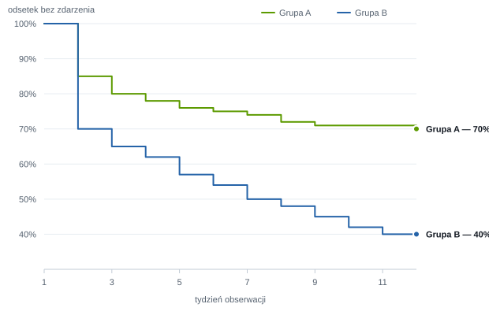

Analizy do prac magisterskich, doktorskich i habilitacyjnych
Oferujemy konsultacje w przygotowaniu celu pracy i hipotez. Przygotowujemy cały raport statystyczny wraz z opisem wyników i ich późniejszym omówieniem.
Analizy statystyczne, publikacje, szkolenia. Wspieramy Państwa na każdym etapie realizacji badań — analizy wyników, ich opisu, interpretacji oraz prezentacji.
Zakres usług
Oferujemy konsultacje w przygotowaniu celu pracy i hipotez. Przygotowujemy cały raport statystyczny wraz z opisem wyników i ich późniejszym omówieniem.
Pomagamy przygotować kwestionariusze i autorskie ankiety do przeprowadzenia badań oraz dobrać narzędzia wystandaryzowane.
Przygotowujemy raporty statystyczne i opisy rezultatów zgodnie z wymaganiami polskich i zagranicznych czasopism.
Prowadzimy szkolenia z obsługi narzędzi statystycznych — dla pojedynczych odbiorców oraz dla zorganizowanych grup.
Dostosowujemy część statystyczną i opis wyników do wymagań redakcyjnych uczelni, promotora lub czasopisma — formatowanie tabel i rycin, styl opisu wyników oraz jednolite oznaczenia zgodne z instrukcją wydawniczą.
Wspieramy jeszcze przed zebraniem danych — doprecyzowujemy cel i hipotezy, dobieramy metody do planowanego badania i wyznaczamy potrzebną wielkość próby, tak aby wyniki dało się rzetelnie zinterpretować.
Metody
Metodę dobieramy do pytania badawczego, rodzaju zmiennych i rozkładu danych — nigdy odwrotnie. Pracujemy w programach IBM SPSS Statistics, Statistica i PQStat oraz w języku Python. Poniżej najczęściej stosowane rozwiązania.
| Pytanie badawcze | Dane | Metoda |
|---|---|---|
| Czy dwie grupy różnią się przeciętnym wynikiem? | ilościowe, rozkład normalny | test t-Studenta |
| Czy dwie grupy różnią się, gdy założenia nie są spełnione? | ilościowe lub porządkowe | test U Manna-Whitneya |
| Czy różnią się trzy grupy lub więcej? | ilościowe | ANOVA, Kruskal-Wallis + testy post hoc |
| Czy wynik zmienił się w czasie u tych samych osób? | pomiary powtarzane | test t dla par, ANOVA RM, Wilcoxon, Friedman |
| Czy dwie cechy jakościowe są ze sobą powiązane? | nominalne | test chi-kwadrat, dokładny test Fishera |
| Jak silny jest związek dwóch zmiennych ilościowych? | ilościowe | korelacja Pearsona lub Spearmana |
| Co i w jakim stopniu przewiduje wynik? | ilościowe, binarne | regresja liniowa, regresja logistyczna |
| Ile czasu upływa do wystąpienia zdarzenia? | czas przeżycia | Kaplan-Meier, test log-rank, model Coxa |
| Czy narzędzie badawcze jest rzetelne? | skale, kwestionariusze | alfa Cronbacha, analiza czynnikowa |

Od planu do projektu
Przeprowadzone przez Państwa badania są zawsze realizowane nakładem pracy, czasu, a niejednokrotnie środków finansowych. Przeprowadzenie w sposób poprawny i rzetelny analizy statystycznej nie pozwoli, by ten wysiłek poszedł na marne.
StatPomoc
Na każdym etapie prowadzimy konsultacje, aby całość współpracy przebiegała w sposób jasny. Otrzymujecie Państwo nie tylko gotową usługę, ale również pomoc merytoryczną i wytłumaczenie wykonanej pracy.
Pomoc podczas projektowania badań i opisie metodologii. Pełne opracowanie statystyczne w przystępnej formie. W razie potrzeby podpowiemy, co należy zmienić lub poprawić, zanim zlecą nam Państwo pracę.
Bezpłatna opieka merytoryczna jest realizowana nawet kilka miesięcy po zakończeniu projektu — również przy odpowiedziach na recenzje.
Napisz, co masz: opis badania, ankietę albo surowe dane. Podpowiemy, co da się z nich wyciągnąć — bezpłatnie.